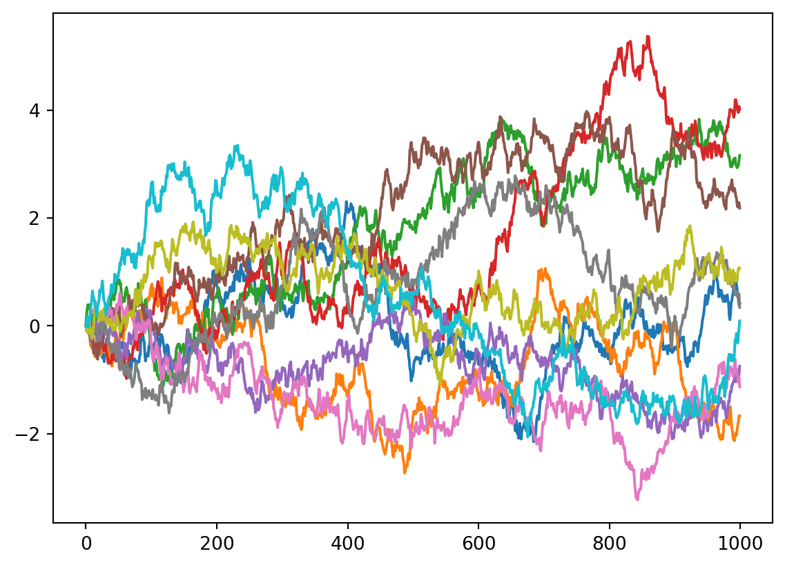
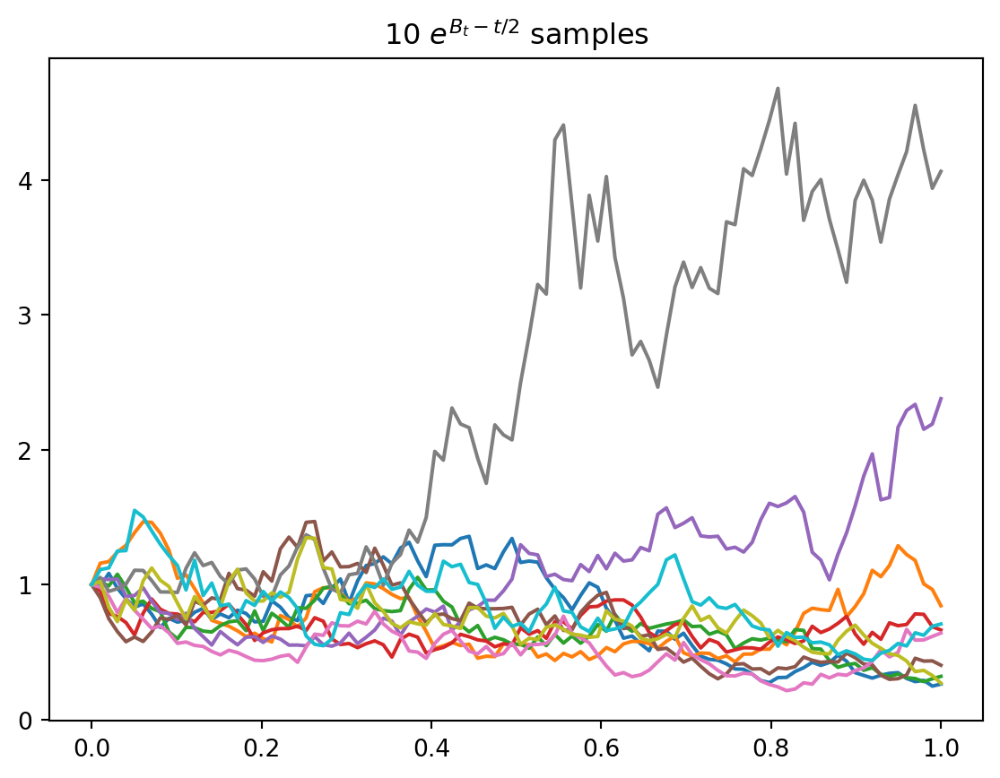
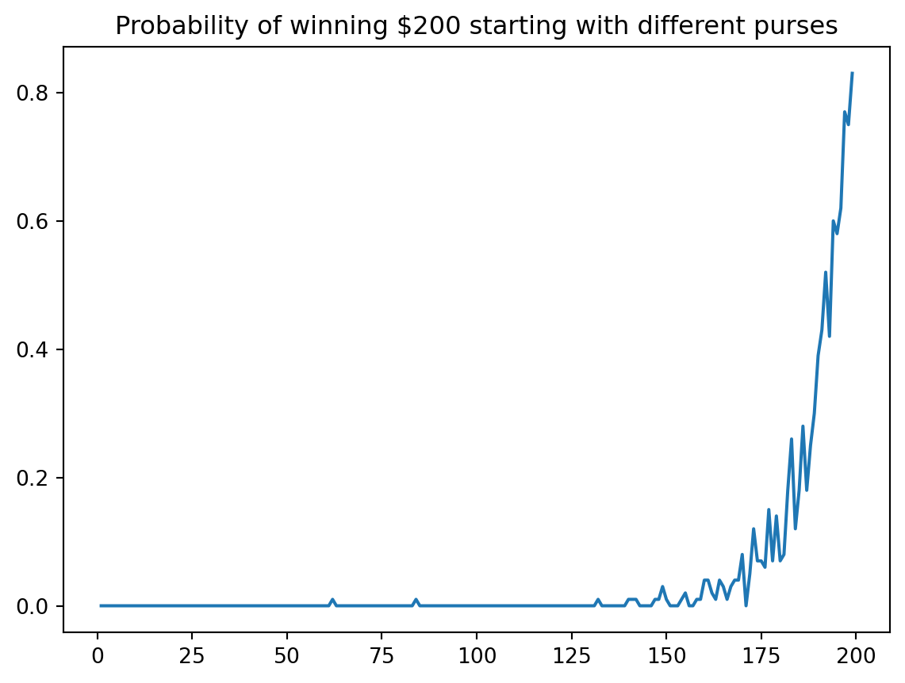

graph TD A[Convergence Almost Surely] -->|Dominated Convergence| B[Convergence in Probability] C[L^2 Convergence] -->|Chebyshev Inequality| B B --> D[Convergent Sum of Probabilities] D -->A
Chapter 4 Computer Experiments
Solutions to exercises and computer experiments
\[ \newcommand{\Cov}{\operatorname{Cov}} \newcommand{\Var}{\operatorname{Var}} \newcommand{\E}{\operatorname{E}} \newcommand{\P}{\operatorname{P}} \newcommand{\rank}{\operatorname{rank}} \newcommand{\trace}{\operatorname{trace}} \newcommand{\sgn}{\operatorname{sgn}} \newcommand{\F}{\mathcal{F}} \newcommand{\G}{\mathcal{G}} \newcommand{\qed}{\tag*{$\square$}} \newcommand{\erf}{\operatorname{erf}} \newcommand{\sgn}{\operatorname{sgn}} \newcommand{\1}{\mathbb{1}} \def\iddots{{\kern3mu\raise1mu{.}\kern3mu\raise6mu{.}\kern3mu \raise12mu{.}}} \]
Notes
Standard Brownian Motion is a Martingale
Example 4.28 (i)
In the book, it is stated that
\[ \E(B_t | \F_s) = \E(B_s + B_t - B_s | \F_s) = B_s + E(B_t - B_s) = B_s. \]
Let’s break this down:
\[ \E(B_s | \F_s) = B_s \]
because \(B_s\) is \(\F_s\) measurable.
\[ \E(B_t - B_s | \F_s) = \E(B_t - B_s) = 0. \] because \(B_t - B_s\) is independent of \(B_s\) (by independence of increments and \(B_s = B_s - B_0\)).
Example 4.29 (i)
Symmetric random walk:
\((X_i, i \in \mathbb{N})\) are random IID variables with \(E(X_1) = 0\) and \(E(|X_1|) < \infty\). Take \(\F_n = \sigma(X_i, i \leq n)\) and \[ S_n = X_1 + \cdots + X_n, S_0 = 0. \]
\[ \begin{align} E(S_{n+k} | \F_n) &= E(S_n + \sum_{i=n+1}^k S_i | \F_n) \\ &=S_n + \sum_{i = n+1}^k \E(S_i| \F_n) \\ &=S_n \end{align} \] where \(\E(S_i | \F_n) = 0\) for \(i > n\) by the IID assumption.
Example 4.36 Last Passage Time is NOT a Stopping Time
The last passage time is for \(a\)
\[ \rho(\omega) = \max \{ s \geq 0 : X_s(\omega) \geq a \}. \]
Suppose that \(X_t\) is a martingale with filtration \((\F_t, t \geq 0)\). Suppose that \(\{ \omega : \rho(\omega) \leq t\} \in \F_t\) for all \(t\geq 0\). Consider \(\{ \omega : \rho(\omega) \leq 0 \} \in \F_0\). We know that \(\F_0 = \{ \Omega, \emptyset \}\).
\[ \begin{align} \{ \omega : \rho(\omega) \leq 0 \} &= \{ \omega: \max\{ s \geq : X_s(\omega) \geq a \} \leq 0\} \\ &= \{ \omega: X_s(\omega) < a,\, \forall s > 0 \}. \end{align} \]
We have \[ \begin{align} \{ \omega: X_s(\omega) < a, \, \forall s > 0 \} &= \Omega \end{align} \]
or \[ \begin{align} \{ \omega: X_s(\omega) < a, \, \forall s > 0 \} &= \emptyset. \end{align} \] If the former is true, then \(X_s(\omega) < a\) for all \(s > 0\) with probability one. If the latter is true, then \(X_s(\omega) \geq a\) for all \(s > 0\) with probability one. Therefore, if \(\rho\) is a stopping time for \(X_t\), then \(X_t\) is bounded above or below by \(a\). By continuity of paths, \(X_0 = a\) and so \(\E(X_0) = a\) which in turn implies that \(\E(X_t) = a\). Suppose that \(X_t \geq a\):
\[ \begin{align} 0 &= \E(X_t -a) \\ &= \int_{0}^{\infty} \P(X_t -a > x) dx \\ \end{align} \] and so we must have \(X_t = a\), almost surely.
On the other hand, if \(X_t < a\), then \[ \begin{align} 0 &= \E(a - X_t) \\ &= \int_{0}^{\infty} \P(a - X_t > x) dx \\ \end{align} \] and so, again, \(X_t = a\), almost surely.
So, \(\rho\) is only a stopping time for \(X_t\) if \(X_t = a\).
Dominated Convergence Theorem
Numerical Projects and Exercises
4.1 Simulating Martingales
- \(B_t^2 -t\), \(t \in [0, 1]\)
import numpy as np
import matplotlib.pyplot as plt
N=10
steps = 100
def brownian(steps, start=0, stop=1):
variance = (stop - start)/steps
return np.r_[0, np.cumsum(np.random.default_rng().normal(0, np.sqrt(variance), steps-1))]
for _ in range(10):
plt.plot(brownian(1000, 0, 10))
plt.show()
t = np.linspace(0, 1, steps)
for _ in range(N):
plt.plot(t, brownian(steps)**2 - t)
plt.title(f'{N} $B_t^2 -t$ samples')
plt.show()- \(S_t = e^{B_t - t/2}\), \(t \in [0, 1]\)
for _ in range(N):
plt.plot(t, np.exp(brownian(steps) - t/2))
plt.title(f'{N} $e^{{B_t - t/2}}$ samples')
plt.show()
- \(N_t - t\), \(t \in [0, 1]\) where \(N_t\) is a Poisson process of rate 1
def poisson(steps, start=0, stop=1):
rate = (stop -start)/steps
increments = np.random.default_rng().poisson(rate, steps)
return np.cumsum(increments)
for _ in range(N):
plt.plot(t, poisson(steps) - t)
plt.title(f'{N} $N_t - 1$ samples')
plt.show()4.2 Maximum of Brownian Motion
def max_brownian(steps, start=0, stop=1):
return np.max(brownian(steps, start, stop))
samples = 10000
maxb_samples = [max_brownian(steps) for _ in range(samples)]
print(maxb_samples.count(0)/samples)
plt.hist(maxb_samples, density=True, bins=np.logspace(0, 1, 1000)-5)
s = np.linspace(0, 4, 1000)
plt.plot(s, (2/np.sqrt(2*np.pi))*np.exp(-(s**2)/2))
plt.show()0.05594.3 First Passage Time
\[ \tau = \min \{t \geq 0 : B_t \geq 1 \}. \]
def tau(steps):
start, stop = 0, 10
interval = (stop - start)/steps
for i, v in enumerate(brownian(steps, start, stop)):
if v >= 1:
return i * interval
return stop
tau_samples = [tau(1000) for _ in range(10000)]
plt.hist(tau_samples, density=True, bins=100)
average_tau = np.average(tau_samples)
plt.title(f'$E(\\tau\\wedge 10) \\approx {average_tau}$')
plt.show()
The expectation \(\E(\tau \wedge 10)\) can be calculated from the distribution of \(\tau\). Since \(\tau \wedge 10 \geq 0\),
\[ \begin{align} \E(\tau \wedge 10) &= \int_{0}^{\infty} \P(\tau \wedge 10 > x)\, dx \\ &= \int_{0}^{10} \P(\tau > x)\, dx \\ &= \int_0^{10} (1 - \P(\tau \leq x))\, dx \\ &= 10 - \int_0^{10} \P(\tau \leq x)\, dx\\ &= 10 - \int_0^{10} \int_0^{x} \frac{1}{\sqrt{2 \pi y^3}} e^{-1/2y} \,dy \,dx \\ \end{align} \]
import sympy as sp
from sympy.abc import x,y
import IPython.display as disp
sp.init_printing(use_latex='mathjax')
integrand = (1/ sp.sqrt(2 * sp.pi * y**3))*sp.exp(-1/ (2*y))
expectation = 10 - sp.integrate(integrand, (y, 0, x),(x, 0, 10)); expectation
disp.display(expectation)
disp.display(expectation.evalf())\(\displaystyle -1 + \frac{2 \sqrt{5}}{\sqrt{\pi} e^{\frac{1}{20}}} + 11 \operatorname{erf}{\left(\frac{\sqrt{5}}{10} \right)}\)
\(\displaystyle 4.12995192235593\)
What proportion of paths never reach 1? This can be expressed as
\[ \begin{align} \P(\max_{t \in [0, 10]}B_t < 1) &= 1 - \P(\max_{t \in [0,10]} B_t \geq 1)\\ &= 1 - \P(\tau \leq 10) \\ &= 1 - \int_0^{10} \frac{1}{2 \pi y^3} e^{-1/2y}\, dy \end{align} \] which can be caluclated with SymPy:
proportion = 1 - sp.integrate(integrand, (y, 0, 10))
disp.display(proportion)
disp.display(proportion.evalf())\(\displaystyle \operatorname{erf}{\left(\frac{\sqrt{5}}{10} \right)}\)
\(\displaystyle 0.248170365954151\)
We can also retrieve an approximation from our simulation:
sum(t == 10 for t in tau_samples)/len(tau_samples)\(\displaystyle 0.2604\)
Gambler’s Ruin at the French Roulette
import numpy as np
import matplotlib.pyplot as plt
def roulette_win(start=100, stop=200, p = 18/38):
rolls = 2*np.random.default_rng().binomial(1, p, size=5000) - 1
purse = np.cumsum(rolls) + start
for p in purse:
if p == 0:
return False
if p == stop:
return True
return purse[-1] >= start
print(f'Probability of winning $200 starting at $100 is ~ {sum([roulette_win() for _ in range(100)])/100}')
probability_estimates = [ sum([roulette_win(start=starting_purse) for _ in range(100)])/100 for starting_purse in range(1, 200)]
plt.plot(range(1, 200), probability_estimates)
plt.title('Probability of winning $200 starting with different purses')
plt.show()Probability of winning $200 starting at $100 is ~ 0.0